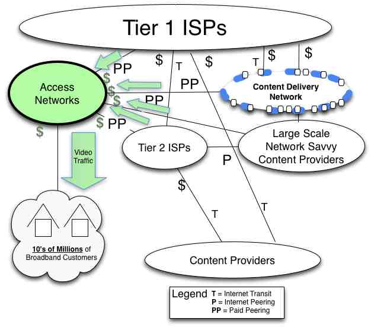
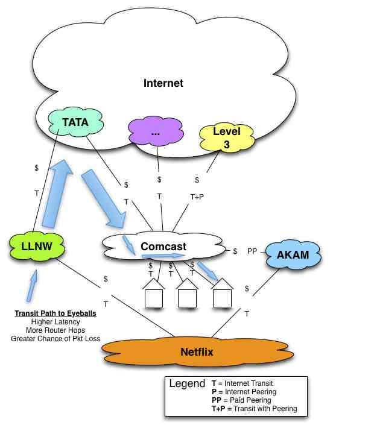
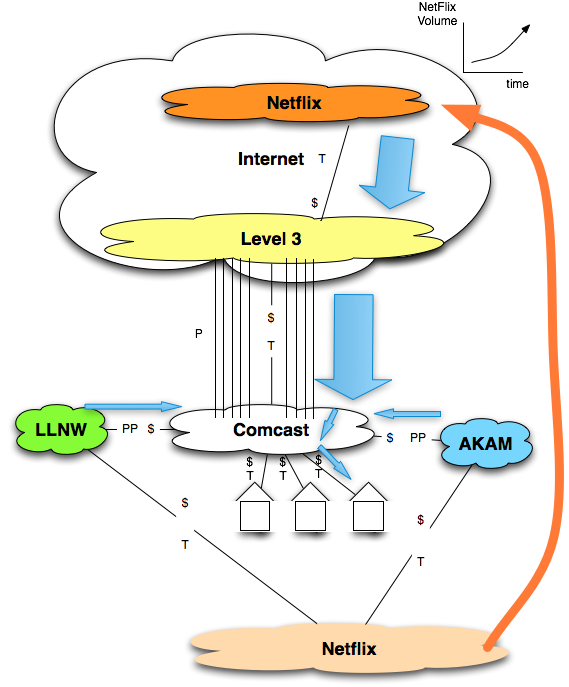
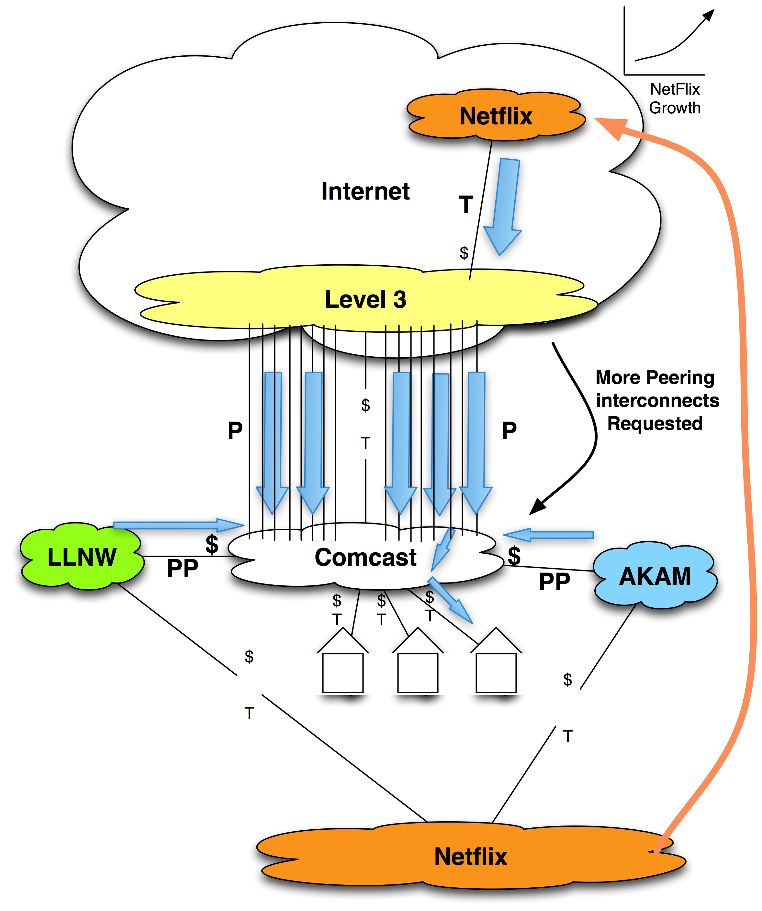
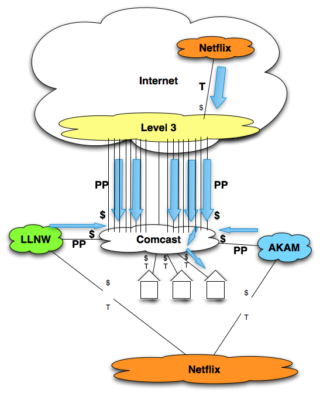

Evolution #6 – Access Power Peering
The Internet Peering Ecosystem in the U.S. appears to be morphing again, this time positioning the access networks into a much stronger power position.
Definition: Access Networks (also known as “eyeball networks”) are Internet Service Providers that sell Internet access to end-users.
Access Networks include cable companies, telephone companies and wireless Internet providers. Since Internet users primarily download content, Access Network traffic is generally in-bound (towards the end-user).
[Note: We are naming Comcast explicitly when illustrating this evolution. There are other examples of this maneuver, but there is far more data available about the Comcast-Level 3 dispute. By walking through this story we can more succinctly and concretely demonstrate Access Power Peering.]
Video Dominates the Internet. As stated above, in 2011, at least 40-50% of all U.S. Internet traffic was video, according to conversations with ISPs. Separately, the movie industry people emphasized that video is unlike other applications. They said that disruptions (pixilation, freeze frames, audio garbling, etc. called “artifacts” in industry jargon) in a movie video stream cause a break in the “suspension of disbelief.” This effectively destroys a video watching experience for the end user. Video traffic dominating the Internet and the requirement for flawless video, taken together, highlight the importance of an optimized Internet Peering Ecosystem. Content distributers need to be able to deliver increasing volumes of video traffic with very high quality.
At the same time, significant change occurred in the U.S. Internet Peering Ecosystem.
Comcast Peering Policy. In the mid-2000s, Comcast put in place a Peering Policy stating that they require (among other things) that traffic volumes exchanged be roughly balanced. Traffic in the inbound direction (to Comcast customers) had to be (roughly) balanced with the outbound direction (from Comcast customers). Some in the industry have said that the specific not-to-exceed-ratio is around 2:1. This peering ratio prerequisite and the ratio value is somewhat common in the industry.
However, consider that
- Internet video is or soon will be the dominant Internet application, and
- Internet video tends to be massively asymmetric (as high as 30:1), and
- Comcast customers consist of tens of millions of eyeballs primarily pulling down content from the Internet.
Very few peering candidates have or will ever have a balanced ratio to offer to an access network. Video content delivery companies such as CDNs and content-heavy ISPs certainly won’t have balanced peering ratios with access networks. These companies are in the business of getting video objects to the eyeballs and have very little traffic to pull from Comcast. Since a large portion of Internet traffic is destined to be video traffic asymmetrically delivered to the access networks, such a Peering Policy effectively ensures that this traffic can not be freely peered.
Comcast Paid Peering
Comcast started offering a Paid Peering service for those that did not meet their peering prerequisites. Recall from Chapter 4 that Paid Peering is Internet Peering but with some exchange of compensation involved.
Comcast priced their metered paid peering service at about the market price for Internet Transit. Companies with content to send to the tens of millions of Comcast customers could send their traffic through their upstream ISP, or they could send it directly to Comcast for about the same price. At this price point, it is a good value proposition and several CDNs have gone down this path and purchased Paid Peering from Comcast. Let’s look at the affect on the dynamics in the ecosystem.
There is only one way to get to the Comcast customers – all traffic must directly or indirectly make its way through the Comcast network to reach the Comcast customers. Some in the industry call these customers “captive” customers since there is no alternative path to reach them. This captive customer base is the source of potentially great positional power in the Internet Peering Ecosystem as shown in Figure 10-7. With this Access Power Peering, all traffic destined for access network customers (and all corresponding Paid Peering revenue) flows directly to the access networks.
We will see some more Access Power Peering dynamics with the Comcast-Level 3-Netflix dispute discussed next.

Figure10-7. The Access Power Peering paradigm.

Figure 10-8. Alternative to peering is a more circuitous path.
Case Study: Comcast-Akamai-Limelight and Paid Peering
In late 2010, Comcast was purchasing Internet Transit from several ISPs as shown in Figure 10-8.
Akamai was purchasing Paid Peering from Comcast and enjoying low-latency high-capacity access to Comcast customers. Limelight Networks, a competitor to Akamai had a choice to make. Should it continue to send its traffic through its upstream ISP to reach Comcast customers? By doing so, Limelight traffic will suffer higher latency and potentially greater packet loss than its competitor. Philosophically, Limelight feels that it shouldn’t have to pay Comcast to deliver the content that Comcast customers requested!
Limelight’s hand was forced however when one of Comcast’s upstream networks experienced chronic congestion. When this occurred, Limelight content traffic destined to Comcast customers experienced performance problems (packet loss). Since Limelight is being paid by the content providers to distribute the content to the edge for a better quality end-user experience, its customers began to complain. The cause of the problem seemed to be the links between Comcast and Comcast’s upstream transit provider. Limelight’s upstream transit provider is powerless to fix this problem. As a result of this context, Limelight has to purchase Paid Peering from Comcast (Figure 10-9).
From a practical perspective, if you are paid to deliver video to Comcast customers, there is no choice but to purchase Paid Peering from Comcast. This is a potentially huge shift in power in the ecosystem. This power is demonstrated in the Netflix, Comcast and Level 3 story next.

Figure 10-9. The more direct Paid Peering path to the eyeballs.
The Netflix, Comcast and Level 3 Story
Setting the stage. Continuing this example, the relationship between Level 3 and Comcast is a bit more complex than simple transit. According to the ISPs familiar with the situation, Comcast entered into a broad business relationship with Level 3 that included as a condition of the agreement “free on-net” access. This is a well-known tactic discussed further in the ISP Peering Playbook chapter. With this “free on-net” or peering relationship, Comcast got free access to Level 3 customers (which happened to include most of the other cable companies) and Level 3 in return got free access to Comcast customers. This was shown in previous Figures 10-8 and 10-9 as “T+P.” The point is, this broader business relationship enabled Comcast to have settlement-free peering with Level 3, a Tier 1 ISP in the U.S. region.
Act I. Netflix, a large-scale video distribution company, had gained considerable traction with its video delivery over the Internet and used CDN services from both Akamai and Limelight. Netflix was experiencing a near exponential growth in traffic. As shown in Figure 10-9, most of the ‘$’ symbols are on Comcast’s side, so as Netflix traffic grew, so did the Paid Peering fees paid to Comcast.
Act II. Also in late 2010, Level 3 bid for and won the Netflix video delivery business, undercutting Akamai. As a result, Netflix traffic moves from Akamai to the lower-priced CDN that Level 3 offers (Figure 10-10).
Act III. Level 3, since they have a “peering” relationship with Comcast, informs Comcast that there will need to be some additional interconnect capacity. This is a common thing that peers do (Figure 10-11).

Figure 10-10. The shift of video traffic from a paid peer to a settlement-free peer.
At this point, who wins and who loses? Netflix wins a lower cost for video distribution. Akamai obviously loses the Netflix business, so the revenue from Netflix to Akamai decreases. Comcast also loses a corresponding amount of Paid Peering traffic and revenue. Level 3 wins the business and the additional revenue from Netflix. But Comcast loses again, because not only is it is giving up the Paid Peering revenue from Akamai, it is also being asked to spend money on additional peering ports to handle that same Netflix traffic over their free peering relationship with Level 3.
Act IV. In response to Level 3’s request, Comcast refuses to add interconnect capacity and points out that Level 3 is “out of ratio” and needs to pay Comcast for Paid Peering. They argue that it wouldn’t be fair not to charge them since they charge the other CDN partners for Paid Peering. It would be an unfair competitive advantage if Level 3 (which offers a competing CDN service) didn’t pay as well.
This dispute was very public. Much like my airplane story in the beginning of the book, there are opinions across the spectrum as to who was in the right and who was wrong.
Dénouement. To complete the story, Level 3 acquiesces and agrees to pay Comcast for Paid Peering as shown in Figure 10-12.

Figure 10-11. Additional ports requested from Access Network.
This result further strengthens Comcast’s power peering position, since now even a Tier 1 ISP is paying for Paid Peering with Comcast to access its eyeballs. As stated in the beginning of this section, this Comcast story is merely a good demonstration of Access Power Peering evolution, and by no means the only example.

Figure 10-12. Level 3 acquiesces and becomes a Paid Peering customer.
The Problem with Access Power Peering
[Note: I will step up onto the soapbox for a moment here.]
In this chapter, we have seen that the U.S. Internet Peering Ecosystem has morphed. The players and the relationships, the power positions and behaviors evolved with the context.
First, the Tier 1 ISPs were in charge and received a piece of the traffic that directly (from a customer) or indirectly (from a customer of a downstream customer) traversed the Internet region. In this case, the Tier 2 ISPs could peer their traffic between themselves to bypass their transit provider. The Tier 2 ISP could also select a different upstream ISP if they thought they could get a better price. There were choices, and both peering and buying transit in an open market led to cost and performance efficiencies. The Internet Peering Ecosystem evolved into a more efficient fat middle.
The Access Power Peering scenario however is problematic in that it leverages the lack of alternative paths to the eyeballs.
Since 80% of Internet traffic is destined to be video, a large and massively asymmetric stream, the peering ratios clauses will prevent settlement-free peering from happening for 80% of the Internet traffic. Anyone with video content to send to the eyeballs will not qualify for free peering.
So you might say that there are alternatives to free peering: Internet Transit and Paid Peering. However, since 80% of the Internet traffic will be video, video delivery companies must get the content close to the eyeballs. The Internet Transit path is inferior and the video delivery competitors all pay for peering to get direct access to the eyeballs. If you are delivering video, from a practical perspective, there is no choice but to buy paid peering from the access network.
So then you might ask “What is the problem? Eyeballs have a choice – if they don’t like the performance of cable they can move to DSL and vice versa.” Performance would have to be very bad for all access customers to switch. During this time, the content companies will get complaints from the access customers, and the CDNs will hear those complaints as well. It is easier for the few content companies to purchase paid peering or purchase from a CDN that purchases paid peering than for the access customers to all pick up and move to a competitor. The context is such that the video delivery companies will give in first and pay the access networks. The problem is that all traffic and revenue in this model leads to the access networks, solely because they have the power position based on a captive customer base.
In the earlier example, Comcast charged market transit prices for Paid Peering. But what prevents them from charging a higher price? What is the alternative for CDNs whose business is to get the web objects as topologically close to the eyeballs as possible?
Is the next Internet Peering Ecosystem model really that everyone pays the access networks to deliver the 80% video Internet traffic?
From this we can recognize its position in the Internet Peering Ecosystem, identify its motivations and even predict its behavior. At this point you should have a good idea of the players, the positions, the corresponding motivations and behaviors observed within the Internet Region.
Peering Workshop Practice Questions
Here are a few practice questions from the Internet Peering Workshop:
1. What are the motivations for purchasing Paid Peering?
2. Who is in a strongest position to negotiate Paid Peering prices?
Answers to these questions are in the answer key in the back of the book.